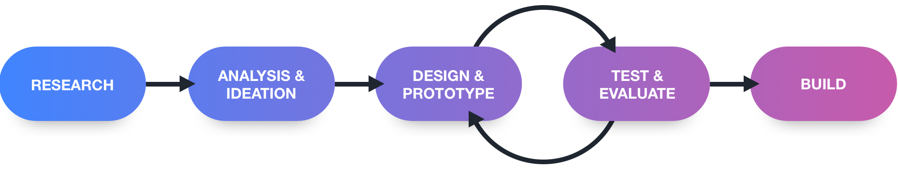

Maestro
Musical Education Web App for Children
People who use the internet as a learning resource claim that their learning experience is poor, resources are also inconsistent or poorly written.
Maestro is a musical teaching environment primarily designed for younger children (5-11 years). Maestro aims to help young people learn music theory, rhythm, and trivia. Each of these interactive components explores different areas to give the user a holistic musical knowledge.
Team
Mark Brown
Karla Geron
Nimah Murshed
Role
User Research + Interviews. Information Architecture, Wireframes, User Testing, High Fidelity prototype, Development.
Design Process
Survey & Background Research
We explored the market and conducted some initial research on the background of the different systems already available while also gathering statistics on what solutions people currently use to learn with and how effective they rate them. 77% of 80 participants said YouTube was the go-to resource but rated their experience 3.5/5 on avg. We followed up with a few people from the participants which resulted in some interesting takeaways:
Information Architecture
Converging all these details from research meant we could narrow down requirements and features through card sorting exercises. This gave us some context for the sketches and wireframes. We also derived a sitemap from these details.
Design
Collaborating at every stage of the design, We began with a pencil and paper sketch. After a group and peer review, we progressed from low to high fidelity wireframes. We also used feedback received from the early user testings.

Testing
We tested our first prototype with users to gain valuable feedback early on which revealed some pain points and frustrations. We continued this process throughout each part of the design phase. Some common observations were:
To quantify the improvement of our designs we used a system usability questionnaire which showed an interaction improvement of 58%. The quantifiable improvement displays how influential iterative design is to the product.
Development
Our development phase started around the same time as the LoFi prototype this meant that we could get the foundations setup. This logical head start meant that once the initial high fidelity design was completed, we could begin building the basic UI, making more effective use of the project's time frame.
In the time frame we were unable to deliver the entire product but what we had achieved exceeded our peers’ expectations. Instead, we were able to display that our product has the potential to be more effective than non-interactive learning providers.
The Takeaway
Since this was a university module project, it was illogical to plan a project as large as that alongside of the other projects, studies, and work that we had to manage. Restricting the scope of a project to ensure it can be delivered on time is an essential skill which I can now reflect on in future projects.
It’s also important to balance the technicalities of the design as well as the user’s needs.